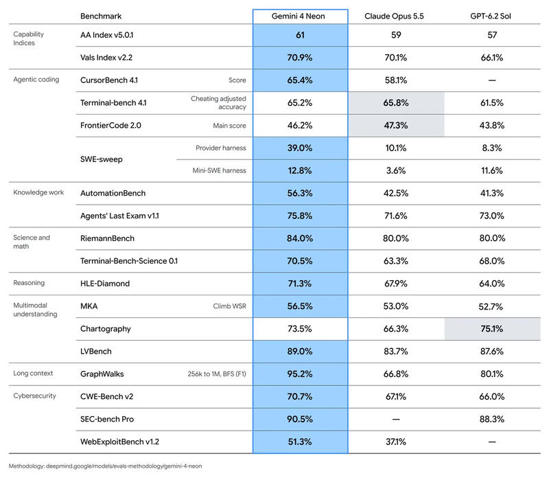
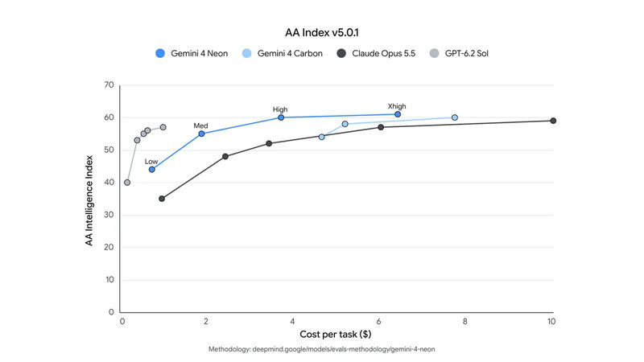
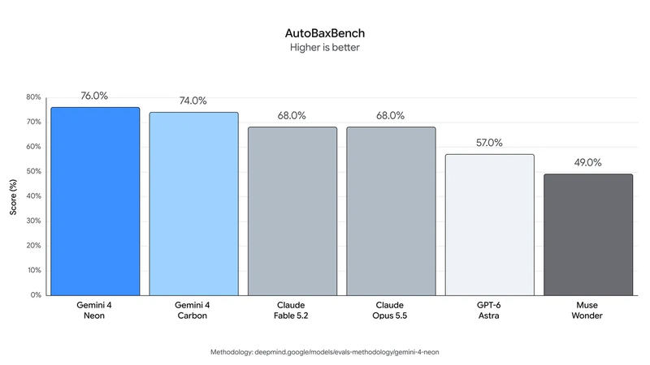
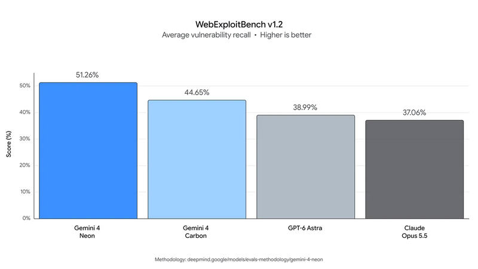
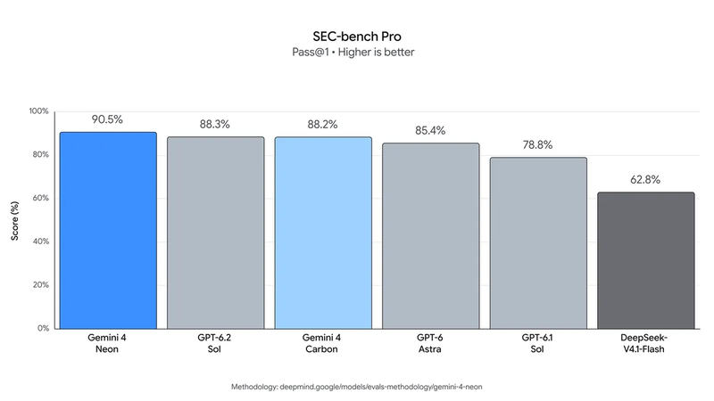
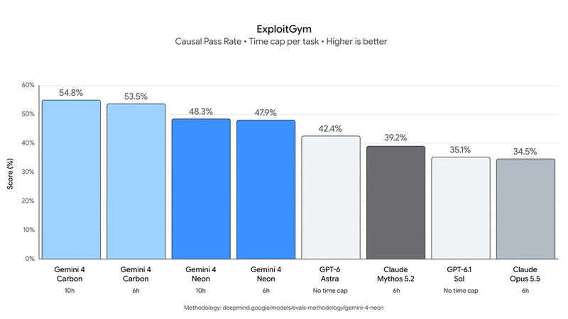
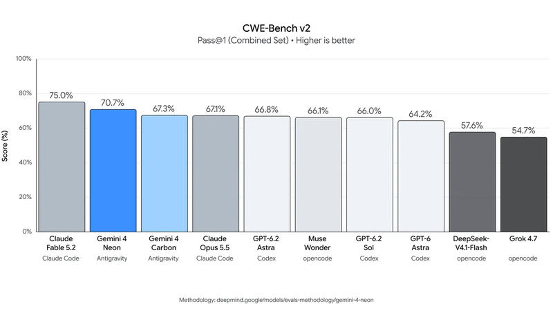
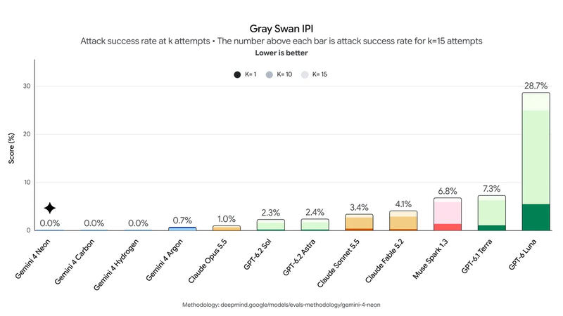
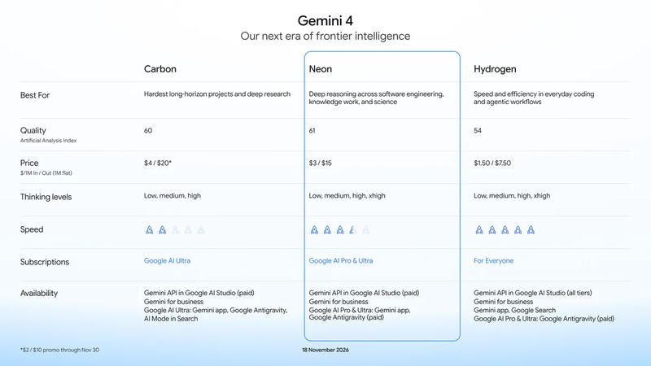

Original introduction article ·
Introducing Gemini 4 Neon
By Koray Kavukcuoglu · News from Google · Nov 18, 2026
Bringing frontier-level intelligence with fast end-to-end task completion across complex software engineering, knowledge work, and science workflows.
Today, we’re introducing Gemini 4 Neon — bringing frontier-level intelligence with fast end-to-end task completion across complex software engineering, knowledge work, and science workflows.
Neon ranks ahead of comparable models and #3 overall with a score of 61 on the Artificial Analysis Intelligence Index at its xhigh thinking level, landing just behind larger, slower models. On the Vals Index, Neon ranks #2 and lands on the Pareto frontier. Beyond just pushing on raw model capability, we’re continuing to make our models better to work with, Neon ranks #2 on steerability (adapting cleanly to mid-task user corrections) on the new Agent Arena Index. Neon also excels at multi-step instruction following and builds on our ongoing progress to curb fabrication, recording our lowest fabrication rate yet in internal Google Antigravity testing.
The model is priced at $3 per million input tokens ($0.15 per million cached input tokens, a 95% discount) and $15 per million output tokens, with a 1 million-token context window.
Gemini 4 Neon is rolling out today in the Gemini API in Google AI Studio, Gemini for business (via API and model dropdown), for paid Google AI Pro and Ultra subscribers in Google Antigravity, and for Pro and Ultra subscribers in the Gemini app.
Delivers across enterprise, analytical, and scientific work
Enterprise work lives in spreadsheets, PDFs, charts, audio, and video. Neon can synthesize across all of these inputs in a single 1 million-token context window and turns inputs into structured deliverables. Independent evaluations rank Neon as one of the top models and on benchmarks like the Vals Index, it ranks #2 (70.9%), and reaches #1 on both the Legal Research Bench and Tax Agent Bench.
Neon also shows strong wins across categories on Surge AI, ranking #1 on most benchmarks across finance, accounting, spreadsheet modeling, and complex constraint following. It also scores 73.5% on Chartography for reading dense professional charts and performs on par with leading models on Agents’ Last Exam v1.1 (75.8%). It achieves #1 overall on both Zapier’s AutomationBench (56.3%) and Andon Labs’ Vending-Bench 2 ($16,843), a long-horizon simulation of running a business. Finally, it debuts #2 globally with a score of 1336 on Arena’s new Agent Arena Index across 4,200+ real-world agent sessions.
On scientific and mathematical reasoning, spanning quantitative analysis, mathematics, and technical research problems, Neon is best in class on Terminal-Bench Science (70.5%), RiemannBench (84.0%), and HLE-Diamond (71.3%).

Built for production-ready code
Engineered for long-running agent workflows, Neon sustains performance through complex, tool-heavy tasks end-to-end — whether running standalone or acting as a fast, high-judgment Orchestrator directing parallel Hydrogen subagents in Google Antigravity. It cuts down on redundant file reads, shares progress as it works, and handles context compaction reliably in long sessions.
Across core developer and researcher workflows, Neon achieves frontier performance and is competitive with the leading models in its class, ranking #1 overall on the Artificial Analysis Coding Agent Index (58.6), with a score of 65.2% on Terminal-Bench 4.1 and 46.2% (at its default high setting) on FrontierCode 2.0. For production-ready code, Neon handles multi-file debugging and refactoring across repositories with targeted, surgical edits. On SWE-sweep, it already leads on the mini-SWE harness (12.8%) and more than triples to a state-of-the-art 39.0% in Google Antigravity showing what the Antigravity harness unlocks.
Brings efficiency and control to production-grade workflows
We’re refining thinking levels with each new model release to give teams finer control and a smoother progression from one tier to the next. Neon’s four levels scale steadily, letting teams dial intelligence and token spend to what each workload needs.
Neon delivers high performance at a lower cost per task across third-party benchmarks. At its default high thinking level, it pairs a high Artificial Analysis Intelligence Index score with a 32% lower cost per task than Carbon. It also sits on the Pareto frontier on both the Vals index and Agent Arena at high, with roughly 50% to 80% lower cost per task than top competing frontier models. xhigh thinking adds deeper, multi-step reasoning for the hardest engineering, analytical, and scientific workloads. Neon shows its highest intelligence score here, while still costing 36%+ less per task than competing models at their highest setting.

Built for fast, low cost, frontier-level cyber defense
As agentic coding scales, generating secure code from the start is critical. Gemini 4 Neon produces more secure code than Carbon across all easy, medium, and hard challenges on AutoBaxBench, achieving state-of-the-art on the hard tier (76%).
Securing systems also means proactively finding flaws before attackers do. Penetration testing has served as a cornerstone of enterprise cybersecurity. On WebExploitBench v1.2, Neon is state-of-the-art (51.26%) at half the cost of competing large models.
To fortify existing code, Neon for cyber delivers frontier-level performance across the code hardening lifecycle — vulnerability finding, validating, and patching — all while being faster and more cost efficient than large frontier models.
- Finding code vulnerabilities: Neon achieves state-of-the-art performance on SEC-bench Pro (90.5%), while costing roughly half as much per challenge.
- Validating risk through exploitation: To prioritize which vulnerabilities to remediate, defenders rely on models to check which vulnerabilities are exploitable. On ExploitGym, it achieves frontier-level performance using half the tokens of Carbon.
- Patching vulnerabilities: Fixing the root cause of vulnerabilities is a critical step in the cybersecurity defense lifecycle. Neon reaches 70.7% on Collinear’s CWE-bench v2, driving a 3.4% uplift over Carbon.





Gemini 4 Neon for cyber is rolling out to trusted defenders in the coming days as part of the Fairwind Program.
Designed for safe, dependable execution
Gemini 4 Neon builds on improvements from our Gemini 4 safety and security stack— maintaining Gemini 4 Carbon-level protections against severe misuse and prompt injection while advancing further on model alignment and agentic behavior. For a model meant to carry demanding, long-running work in production, we concentrated on:
- Mitigating frontier misuse safety risks: Because Neon brings frontier-level capabilities to a faster, lower-cost model, we paired it with strong real-time safeguards against cyber and biosecurity misuse comparable to our Carbon protections, while declining far less legitimate work in these areas, refusing for instance just 1.98% of tasks on Terminal-Bench 4.0 and 0% on Terminal-Bench-Science.
- Advancing alignment and disciplined model behavior: In internal coding use, alert rates from our chain-of-thought and action misalignment monitor remained below the already low baselines set by Carbon, suggesting improved alignment propensity for Neon — and that same monitor is deployed to protect Neon across external surfaces. Neon is trained to complete multi-step work without cutting corners, fabricating results, or overstepping user boundaries — continuing to improve the balance between following through on requests and staying within scope. It matched Carbon with 0.0% cheating on Terminal-Bench 4.0 and took shortcuts on just 2.45% of tasks on our coding cheating evaluation (the lowest rate of any Gemini 4 model). It also achieved a 0.09% misaligned action rate on our agentic safety suite and a 99.2% pass rate on our agent honesty evaluation. On our agentic behavior evaluation, Neon builds on Carbon’s strong baseline by further reducing under-service by 43%–56% and overreach by 15%–35% across different effort levels.
- Protecting users from indirect prompt injection attacks: On Gray Swan’s IPI benchmark, Neon is more resilient than other models in its class when malicious instructions are planted in the web pages, emails, documents, or code it accesses. We found that with real-time safeguards at its highest thinking level, Neon resisted every attack within this Gray Swan benchmark, matching the 0.0% attack success rate reached only by other Gemini models.

For more details, see the Gemini 4 Neon model card.
Built for deeper analysis
In the Gemini app, Gemini 4 Neon excels at work that requires frontier-level reasoning and fast responses.
- Higher-quality writing and knowledge work: Neon writes clearly, with well-structured responses and a natural, direct tone. It reads uploads like spreadsheets, PDFs, and photos more precisely, turns dense material into helpful reports and summaries, and pulls in relevant details from Google apps like Gmail and Docs.
- Reliable research and analysis: Neon frequently incorporates details from sources across the web to keep responses current for fast-moving topics like comparing pricing across vendors before a major purchase or pulling together a complex brief with the latest market data.
- Faster help for tougher tasks: Tasks in Gemini can now run on Neon, working through complex, multi-step jobs more quickly and efficiently than with larger models. Get more done while stretching usage limits further when handing off tedious to-dos, like analyzing billing statements to spot why a utility charge spiked or cross-checking multiple receipts and documents to negotiate a refund.
Where Neon sits in the Gemini 4 family
Neon is built for complex coding, analytical reasoning, and production-grade enterprise workflows. While Carbon tackles your hardest, long-horizon projects and Hydrogen handles fast everyday execution, Neon balances depth and efficiency. Neon delivers frontier-level reasoning for complex, high-frequency workflows faster and more cost efficiently.

Start building with Gemini 4 Neon today
Gemini 4 Neon begins rolling out today:
- For developers: Build with the Gemini API paid tier in Google AI Studio and Android Studio, if you’re a paid Google AI Pro or Ultra subscriber, you can try Neon in Google Antigravity and all Pro and Ultra subscribers can try it in AI Studio.
- For enterprises: Use Gemini 4 Neon in Gemini for business (via the API or model drop-down) and Google Antigravity.
- For consumers: If you’re a Google AI Pro or Ultra subscriber, you can select Gemini 4 Neon from the model drop-down in the Gemini app.
- For cybersecurity defenders: Eligible Fairwind Program members will begin receiving access over the next few days. To request access to the Fairwind Program, contact your Cloud account team.